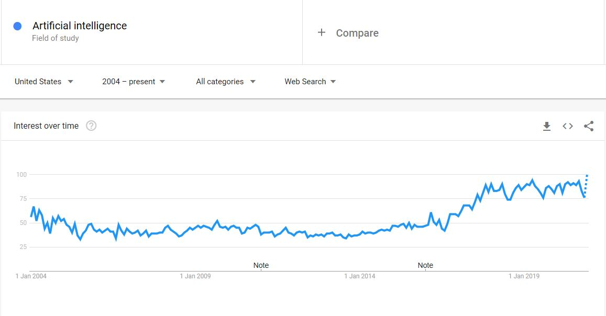

BookMark
Artificial intelligence and machine learning
What does it do?

Artificial intelligence has become one of the pioneers expected to be leading the fourth industrial revolution. According to google search, interest in Artificial intelligence and machine learning gradually rise. AI has been already pervasive in our society in different forms. The most well-known example of AI is email spam filters. This section will illustrate the concept, examples of artificial intelligence and several possibilities of artificial intelligence in the future.
Although the terminology of artificial intelligence has changed as times goes by, the basic definition of artificial intelligence is the machine that not only mimics human intelligence but also thinks about itself and applies its decision to solve problems. Overall, there are three types of artificial intelligence; Artificial narrow intelligence(ANI), Artificial general intelligence (AGI) and Artificial superintelligence (ASI). AGI refers to the machine which enables learning itself and applies its resolution to any problems as well as mimics human behaviours, whereas ASI is the advanced type of artificial intelligence surpassing human’s capability and having self-awareness. The most common type of artificial intelligence these days is Artificial narrow intelligence(ANI). As ANI includes the word “narrow”, it merely is able to simulate human behaviour based on the data given by humans. Even though ANI has few capabilities, it is already used in various fields, the examples of ANI are Apple’s face recognition, Google Photos app and DeepMind’s board game.
The concept of artificial intelligence started from a simple question which is whether a machine can think itself in 1949 Edmund Berkeley’ book. The term AI was coined by John McCarthy in a Dartmouth research project in 1956. Scientists debated how to teach machines to think for themselves and began to research the teaching machine tools so-called machine learning.
Artificial intelligence is implemented based on machine learning and massive data. Machine learning means one of the tools for teaching machines to perform as humans. The major task of artificial intelligence is to find the pattern and elicit optimized options based on the patterns. These patterns are constructed by massive amounts of data. Since Artificial intelligence is learned from the data, it is essential to prepare diverse and especially unbiased information. There are three types of machine learning; supervised learning, unsupervised learning and reinforcement learning. Supervised learning means humans directly teach the form of a pattern so the machine is merely implemented by structured command, whereas unsupervised learning refers to acquiring patterns itself through millions of images which indicate few objects. Lastly, reinforcement learning implies the computer traces the most appropriate command by rewarding and penalizing about trials and errors.
Though there were a number of machine learning tools such as top-down approach which is computer pre-programmed by the rules related to human behaviour, it might be estimated that eventually neural network method, the foundation of deep learning, has dominated overall machine learning areas. The motivation of neural networks begins from the recognition process of the human brain. Similarly, the human brain activates many neurons to analyze information and output responses, neural networks use a lot of interconnected units which are computing systems to determine solutions. Each unit has its original principle. Following their standard, they decide whether to deliver the specific information to other units and what shape it conveys. For example, when AI recognizes the word ‘z’, several initial units receive the words and choose whether to send the word. After the process repeated various units, the results will be similar to ‘z’ though it may not consist of precisely the same lines but similar lines. It indicates that neural networks imitate the abstract thinking of humans.
Many specialists and press state that AI has a lot of possibilities to contribute and enhance the quality of life. They mentioned three keywords representing artificial intelligence; new workforce, autonomy and innovative communication. Specialists predict that artificial intelligence will replace not only blue-collar jobs but also white-collar jobs. They predict that artificial intelligence will undertake mundane tasks instead of employees and regardless of time limitation because the AI will probably be implemented 24 hours. change may enhance customer experience since the customer can use the service any time they choose. Moreover, it is anticipated that all transportation will enable self-driving cars. This autonomy leads to the increment of convenience in our lives. It is expected that people might call an uber on demand shortly. The revolution of communication will also probably arise. By using artificial intelligence which specializes in language translation, people may interact with foreigners in their native languages. This may result in innovation in terms of humans being social creatures.
What is the likely impact?
AI will lead to both positive and negative impacts. The positive impact of AI would occur in various fields like entertainment, medicine, cybersecurity and vital tasks. One example of this is customized contents. Based on user preferences. AI might produce tailored films in which virtual actors appear with a sophisticated programmed storyline. In medical areas, AI algorithms are capable of customizing optimized healthcare for each patient based on their lifestyle, genes and environment.
However, AI also has the possibility of causing a number of unexpected consequences. The risks of privacy and cybersecurity might rise since AI is implemented based on the data. For example, in the medical sector, patient health information tends to be considered a top priority and sensitive information. It means that it will be catastrophic if patient private information is hacked. To address these problems, the government should have a legitimate novel restriction and policy.
It is also anticipated that AI will probably demolish some occupations. Mckinsey illustrates that huge technological change might bring about 30% of job replacement worldwide. According to builtin.com, few occupations such as accountants, truckers, radiologists and factory workers might be faced with layoff.
Although it is obvious that AI will possibly cause job loss, it results in novel professions at the same time. The World Economic Forum reports that professionals related to AI will sharply increase over the next two years. They mentioned that not only IT careers such as software engineer will expand but also AI will lead to new jobs that had never existed. The new occupations created by AI appearance will be AI writer, AI coach, personal data broker and the AI, ethicist. In particular, an AI writer is similar to a designer. They create an overall profile of AI such as personality, tone of voice and behaviour. It might be challenging to design virtual assistants to look like real people. To achieve this objective, applicants are required to know computer language and psychology knowledge. An AI ethicist is a role consistently advising ethical practice and protecting AI from consequences, discrimination and bias. It is well-known that AI caused several ethical issues such as the accidents of autonomous cars. It is expected that the more AI will be commercialized, the more ethical dilemmas will occur. Accordingly, AI ethicists will be a critical profession in society.
How will this affect you?
If artificial intelligence is commercialized with affordable price and advanced functions, it will possibly affect various areas, typically in terms of communication and economy.
AI may contribute to releasing an individual's loneliness. Communication is one of the basic needs of humans who are sociable creatures.
Some people, especially the elder, struggle to maintain a connection with society. In extreme cases, they die due to loneliness. Considering the issue,
AI might be one of the resolutions for them because it can be used without limitation of time and location.
It is anticipated that AI will probably interlocutor for the seniors as well as take care of their health, specifically manage their diet and notify them of time to take medicine.
Regarding this phenomenon, Some people establish a lobby for AI and make policies and law for their rights.
The reason for that is the more individuals have interaction with AI, the more fellowship between them will increase.
In other words, they might tend to easily recognize AI as their true companion.
For example, many people feel uncomfortable and express empathy for the video released by CNN.
Even though the video merely shows an experiment of robot's performance, people raise their voice about abuse and bullies of robots.
Another example is that a solemn Buddhist from Japan arranged the funeral for his robot dogs based on nationalgeographic.com.
Therefore, It is possible that AI will not only impact on convenient life but also become a companion of people.
AI also might affect the workforce market. Although the potential of dismissal for some remains, AI may provide advanced productivity and it will result in economic growth. If AI performs mundane tasks for employees, people will be allowed to concentrate on sophisticated tasks which require personal assistance and guaranteed balance of work and leisure. Additionally, AI may be a solution to cope with the low birth rate concern. Decreasing birth rate and ageing society is a crucial issue in Korea because it occurs with low productivity and the decline of economic growth. To deal with the problem, AI might be used as an alternative to providing a sustainable workforce for the economy.